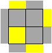
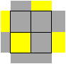
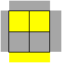
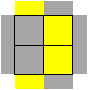
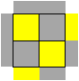
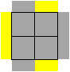
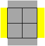
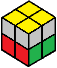

2x2 Beginner Tutorial
Next we will make the top side all yellow.
With the white side on the bottom, look at where the four yellow stickers are. Other than the solved case, there are seven possible cases, shown below.

Sune
Sune

Anti-Sune
Anti-Sune

Headlights
Headlights

Blinkers
Blinkers

Bowtie
Bowtie

Pi
Pi

Double Headlights
Double Headlights
Fortunately, we can use one algorithm to solve all of them: (RUR'U)(RU2R'). This algorithm is called the Sune, and it solves the Sune case.
If you encounter one of the other six cases, face the top in the direction shown, then do the Sune. This will give you a Sune or Anti-Sune case which you can then solve using the Sune.
When the top side is all yellow, we are ready to complete the top layer.
